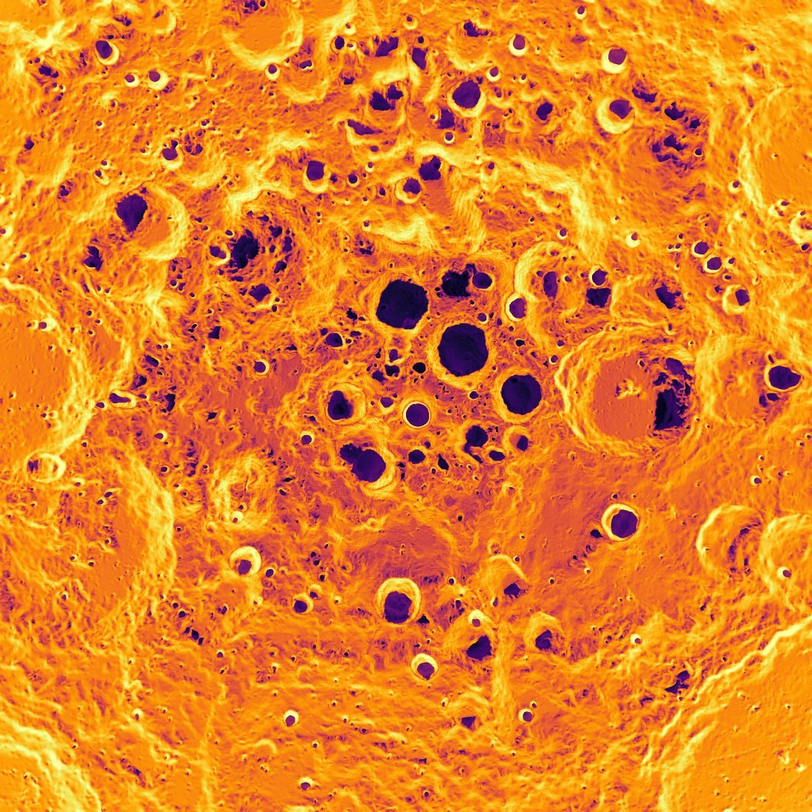
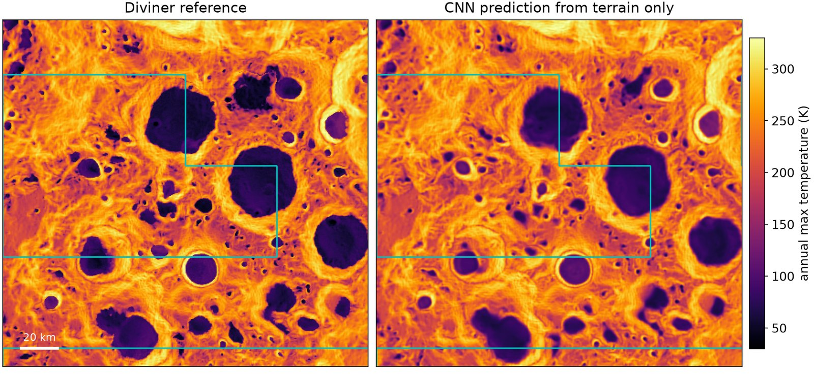
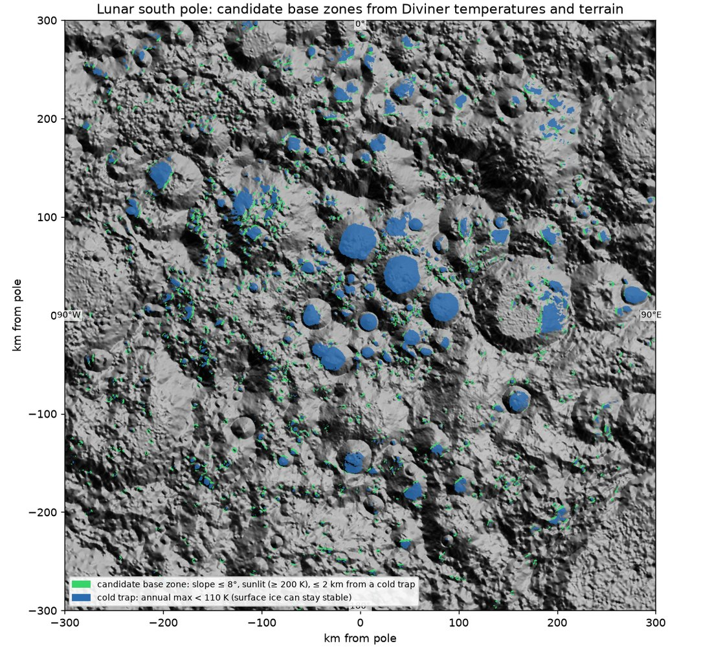

Mapping candidate base zones at the lunar south pole with deep learning, and what an Earth analog must match
Arsen Chuzhykov · Oluwafeyisayo Afolabi
Challenge: Identify Earth Locations that Analog the Permanent Moon Base Locations and Mars

Power and warmth. Near the pole the Sun stays within a few degrees of the horizon, so hills cast shadows tens of km long.
We screen for slopes of 8° or less. Choosing a real landing site needs much finer maps.
Surface water ice lasts only in cold traps: shadowed ground where the yearly maximum temperature stays below about 110 K.
Our question: can a neural network predict the thermal map from terrain alone, and find where all three needs meet?
Why it matters for this challenge: these zones define what an Earth analog has to match (slide 6).

| Model (test blocks) | Error, all | Error, cold traps |
|---|---|---|
| Latitude only | 30.8 K | 144 K |
| MLP | 13.5 K | 82 K |
| CNN | 12.9 K | 83 K |
| CNN + augmentation | 7.3 K | 45 K |
Error = mean absolute error. Cold traps are hardest: the model blurs the sharp edge between shadow and sunlight.

The CNN's averaged predictions run warm in cold traps, so its two thresholds were tuned on validation blocks: cold < 150 K, sunlit ≥ 200 K. With the reference thresholds it finds only 18% of base-zone area.
A first screening step: it narrows the search, but it cannot choose a landing or base site.
Where every Earth analog breaks down: air, gravity and radiation differ. The coldest snow surface seen by satellite in Antarctica was about 175 K, far warmer than lunar cold traps below 110 K. Scambos et al. 2018
AI use: Claude wrote most of the code and drafted the slides and text; ChatGPT/Codex helped find sources and check claims. The idea, data choices, analysis and conclusions are the team's. Details in the README.